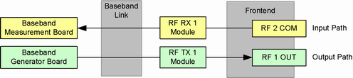

Signal Path Settings
The signal path for input signals comprises an RF connector on a frontend, an RX module connected to this frontend, a fixed or flexible baseband link and a baseband board. Output signals use a reverse path with a TX module instead of an RX module.
Signaling applications use a signaling unit instead of a baseband board.

To define a signal path via remote commands, the RF connectors and the RX/TX modules must be selected.
Contents
- Supported Signal Paths
- Values for RF Path Selection
- Instrument with One RF Path
- Two RF Paths, Two Frontends, Flexible Link, One Subinstrument
- Two RF Paths, Two Frontends, Fixed Link, One Subinstrument
- Two RF Paths, Two Frontends, Two Subinstruments
- Two RF Paths, One Frontend, One Subinstrument
- Two RF Paths, One Frontend, Two Subinstruments
- Four RF Paths, Two Frontends, One Subinstrument
- Four RF Paths, Two Frontends, Two Subinstruments
- Four RF Paths, Two Frontends, Four Subinstruments